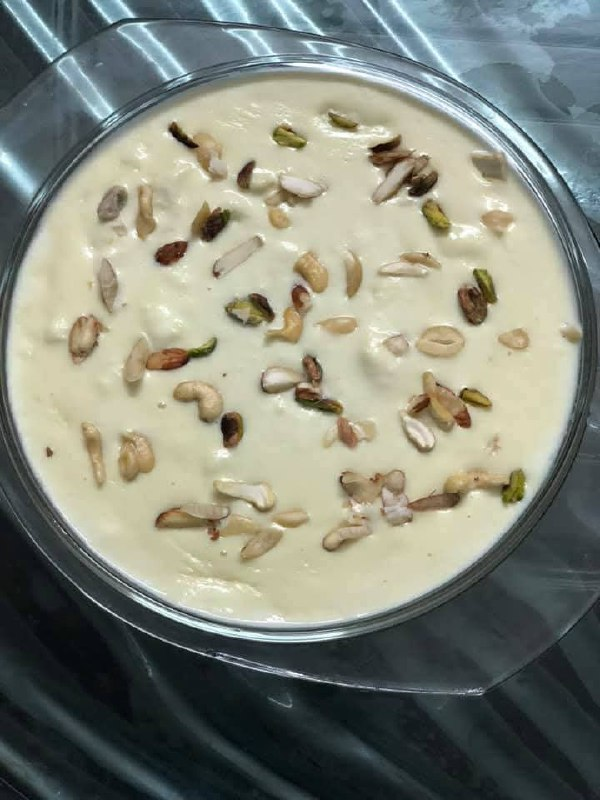

Payesh
A creamy, traditional Bengali dessert made with rice, milk, and sugar — Payesh is the heart of every festive occasion. Garnished beautifully with kaju, pista, and kath badam (almonds), this classic treat brings comfort and sweetness to every bite!
Ingredients
- 1 liter full cream milk
- 1/4 cup gobindobhog or basmati rice
- 1/2 cup sugar (adjust to taste)
- 2-3 green cardamoms
- 1 tbsp ghee
- 2 tbsp chopped kaju (cashews)
- 2 tbsp chopped pista (pistachios)
- 2 tbsp sliced kath badam (almonds)
- A few strands of saffron (optional)
Instructions
- Wash and soak the rice: Rinse the rice thoroughly and soak it in water for 15-20 minutes. Drain before cooking.
- Fry the nuts: Heat ghee in a pan and lightly roast kaju, pista, and kath badam until golden. Set aside for garnish.
- Boil the milk: In a heavy-bottomed pan, bring the milk to a gentle boil. Stir occasionally to prevent burning.
- Add rice: Add the soaked rice to the milk and cook on low flame. Stir often until the rice becomes soft and the mixture thickens.
- Sweeten and flavor: Add sugar and crushed cardamoms. Stir well and cook for 5-10 more minutes.
- Decorate: Pour the payesh into serving bowls and garnish with fried kaju, pista, and kath badam. Add a few saffron strands on top for extra aroma and beauty.
- Serve: Enjoy warm or chilled — every spoonful melts in your mouth with the taste of home!